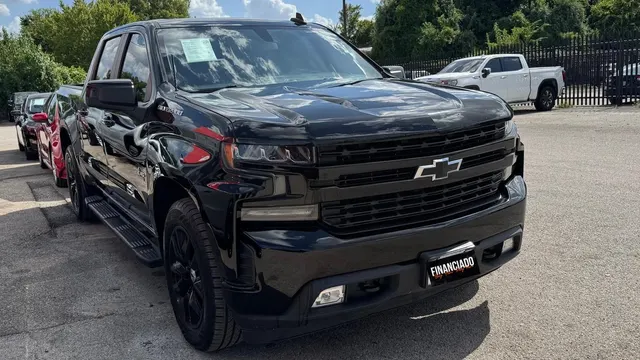

2021 Chevrolet Silverado 1500 RST
Negro • ID CCH-14

1/2Datos generales
| Año | 2021 |
| Marca | Chevrolet |
| Modelo | Silverado 1500 RST |
| Tipo | Troca |
| Color | Negro |
| Millas | 105,000 millas |
| Asientos | 5 o 6 pasajeros |
Motor y transmisión
| Motor | 2.7L Turbo de 4 cilindros |
| Potencia | 310 hp |
| Torque | 348 lb-pie |
| Transmisión | Automática de 8 velocidades |
| Tracción | Por confirmar |
| Combustible | Gasolina |
Capacidades
| Remolque máximo | 9,300 lbs |
| Tanque de combustible | 24 galones |
| Rendimiento | 20/23 MPG (ciudad/carretera) |
Dimensiones
| Largo | 231.7 pulgadas |
| Ancho | 81.24 pulgadas |
| Alto | 75.51 pulgadas |
| Distancia entre ejes | 147.43 pulgadas |
Carrocería
| Cabina | Cabina doble (Crew Cab) |
| Caja | 5.8 pies (caja corta) |
| Rines de serie | 20 pulgadas |
Se ve en las fotos
- Cabina doble
- Rines negros
- Parrilla en negro
- Enganche de remolque
Ideal para
Look deportivo todo en negro, para el trabajo y la ciudad.
Ficha técnica del modelo según el fabricante y medios especializados. Confirma los datos exactos de esta unidad con el dealer.
Motor estándar del trim RST según Chevrolet (documentación de GM vía Automotive World): 2.7L Turbo con 310 hp / 348 lb-pie y automática de 8. El 5.3L V8 (355 hp) es opcional en el trim. Tracción no confirmada: RWD de serie, 4x4 opcional.
Ficha J.D. Power para RST Crew Cab 2WD 2.7L (tracción de la unidad no verificada; Chevrolet anuncia payload máximo de 2,280 lbs para el 2.7L 2WD). / J.D. Power listing for RST Crew Cab 2WD 2.7L (unit's drivetrain unverified; Chevrolet advertises 2,280-lb max payload for the 2.7L 2WD).